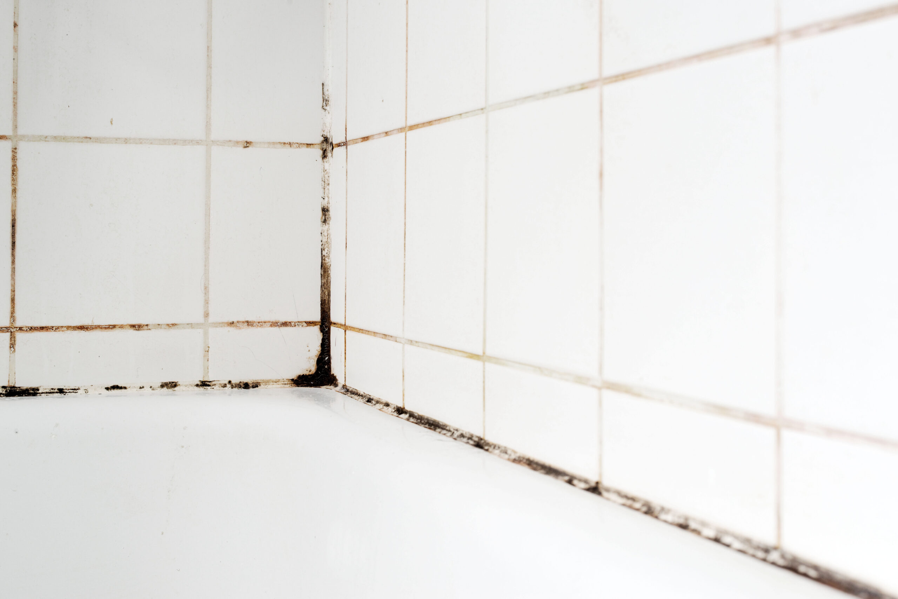

Mold isn’t just an eyesore—it’s a serious health hazard and can cause extensive damage to your home. Even a small mold issue can escalate quickly if left unchecked. Here’s what every homeowner needs to know about mold and how S.W.A.T. Restoration can help.
How Mold Develops
Mold thrives in damp, warm environments and often starts growing within 24-48 hours of water exposure. Common culprits include leaky pipes, roof damage, and poor ventilation in areas like bathrooms or basements.
Health Risks of Mold
Exposure to mold can lead to a variety of health issues, including allergies, respiratory problems, and skin irritation. For those with asthma or weakened immune systems, mold can be especially dangerous.
Signs You Might Have Mold
What to Do If You Suspect Mold
Don’t attempt to handle mold on your own. Professional mold remediation ensures safe removal and prevents the problem from returning. At S.W.A.T. Restoration, we locate hidden mold, eliminate it completely, and address the source of moisture to stop future growth.
Conclusion
Mold is a serious issue, but it’s one that can be effectively managed with professional help. If you suspect mold in your home, contact S.W.A.T. Restoration for a safe and thorough solution.